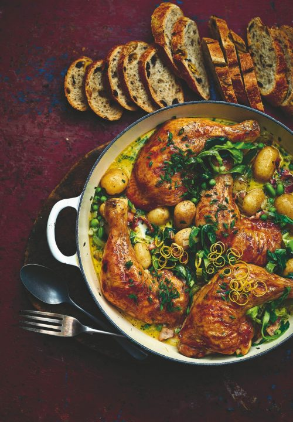

Chicken & Spring Vegetable Casserole

Description
Casseroles aren’t just for the winter months and they’re a great way to enjoy seasonal vegetables. This is a tasty and comforting chicken casserole full of fresh green vegetables and aromatic herbs, and I’m using chicken legs which makes it a great value meal for the whole family to enjoy, but you can use chicken thighs if you prefer. Feel free to mix up the greens – roughly chopped runner or string beans are also great to use. Serve with warm crusty bread for mopping up the juice.
Ingredients
1 tbsp light olive oil
4 chicken legs, skin-on and bone-in
3 smoked bacon rashers, roughly chopped
1 onion, chopped
1 celery stick, finely chopped
2 garlic cloves, minced
300g new potatoes, halved if large
2 lemon thyme sprigs (or regular thyme)
1 bay leaf
100ml white wine
400ml chicken stock
150g baby broad beans or podded edamame (defrosted, if frozen)
200g spring greens or young kale, stalks removed, shredded
150g frozen petits pois, defrosted
2 tbsp chopped flat-leaf parsley
2 tbsp double cream (optional)
2 tsp snipped chives
zest of ½ lemon
sea salt and freshly ground black pepper
Step By Step
- Heat the oil in a shallow 30cm wide casserole that has a lid over a medium-high heat. Add the chicken skin-side down, reduce the heat to medium and leave to cook for 6-8 minutes or until golden brown. Turn and cook for another 3-4 minutes until sealed all over (you may need to do this in batches). Transfer to a plate. Add the bacon to the pan and cook until lightly browned and then add the onion, celery and garlic. Cook for 4-6 minutes until the onion is softened.
- Add the potatoes, lemon thyme and bay into the pan, then pour in the wine. Allow the wine to bubble and reduce for 1 minute. Stir in the stock and return the chicken to the pan, making sure the chicken is skin-side up. Season with salt and pepper. Half-cover the pan, reduce the heat to low-medium and simmer for 30-35 minutes or until the chicken is cooked through. Remove the chicken and keep warm. Add the beans and spring greens, cover and simmer for 3 minutes and then stir in the peas and parsley. Cook without a lid for a further few minutes until the vegetables are tender. Stir in the cream (if using) and check the seasoning. Nestle the chicken back into the pan, sprinkle over the chives and finish with a good grating of lemon zest.
- Serve at the table with a side of warm crusty bread.